Network Types
Purpose & benefits of networking
What is a network?
- A network is two or more interconnected devices (such as computers, printers, and servers) designed to:
- share resources
- exchange data
- communicate with each other
- The purpose of a network is to enable data and resource sharing, communication, and collaboration
Advantages and disadvantages of networks
| Advantages | Disadvantages |
|---|---|
| Devices (e.g. printers) can be shared, reducing costs | Expensive setup – cabling and servers can cost a lot |
| Software licences for networks are cheaper than for individual computers | Difficult to manage – large networks need skilled administration |
| Users can share files and data easily | If the server fails, the whole network can be affected |
| Access to reliable, central data (e.g. from a file server) | Malware or hacking can affect the entire network |
| Files can be backed up centrally each day | Security risks increase if connected to a larger WAN |
| Users can communicate via email or messaging | |
| A network manager can control access rights and internet usage |
LANs & WANs
What is a local area network (LAN)?
- A local area network (LAN) is a network which has a small geographical area (under 1 mile)
- All of the hardware is owned by the company/organisation/household using it
- LANs will use unshielded twisted pair (UTP) cable, fibre optic cable or wireless connections (Wi-Fi)

Advantages and disadvantages of LANs
| Advantages | Disadvantages |
|---|---|
| Allows centralised management of updates, backups and software installations | If hardware fails, the network may not function properly or even at all |
| Can secure its devices with the use of firewalls, antivirus software and other security features to prevent unauthorised access | Networks are more prone to attacks than standalone computers |
| Allows users on the network to share resources such as printers and other peripherals | Access to data and peripherals can be slow depending on network traffic |
| Allows the users of the network to collaborate and share files and folders | Require maintenance to ensure that software is up to date, upgrades and backups which can be costly |
Wireless Local Area Network (WLAN)
- A wireless local area network is a local area network where devices connect to the network wirelessly instead of using cables
- Extra hardware, wireless access points (WAPs) or hotspots are connected to the network so that users can connect using Wi-Fi
Advantages and disadvantages of WLANs
| Advantages | Disadvantages |
|---|---|
| Allows users to connect anywhere that is in the range of a Wireless Access Point (WAP) without the need for additional hardware or wiring. | Limited in their coverage and can be further affected by walls and other structures |
| Can be used in a variety of environments both indoors and out making them highly flexible | Bandwidth speeds can become an issue in high traffic areas |
| Additional wireless access points can be added relatively easily resulting in additional users being able to use the network or increased network coverage | Interference from other devices which can affect performance and connectivity |
| Access to peripherals such as printers | Vulnerable to security threats due to wireless signals being intercepted |
Wide Area Network (WAN)
- A wide area network (WAN) is a network which has a large geographical area (over 1 mile)
- They are a collection of LANs joined together
- The computers on a WAN are connected via routers
- The hardware used to connect the networks together is not all owned by the company/organisation/household using it.
- For example, telephone lines owned by telecommunication companies
- WANs will use fibre optic cable, telephone lines and satellite to connect the LANs together
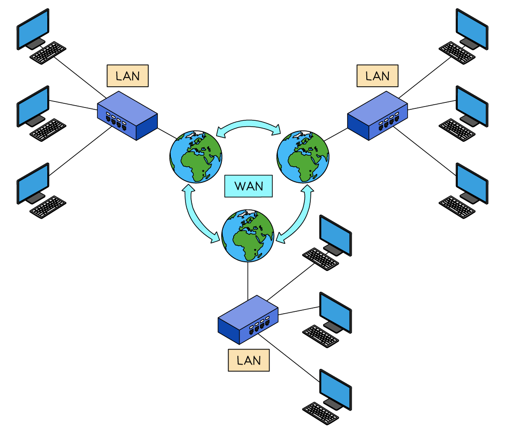
Network Models
Client-server & peer-to-peer
What is a client-server network?
- A client-server network is when powerful and reliable ‘server’ computers control the network and ‘serve’ the clients with services such as files, email, web access, etc
- Clients connect to the servers to access network services
- In this setup, the server hosts, delivers and manages most of the resources and services to be consumed by the clients
| Benefits | Drawbacks |
|---|---|
| Easier central management | Single point of failure - if the server goes down, services could be unavailable |
| Scalability: new clients can be added easily | It can be expensive to set up and maintain - often need dedicated teams of people to maintain them |
| Higher reliability as resources are managed centrally |
- A client-server network is typically used by larger organisations where centralised control is needed, and reliability and security are paramount
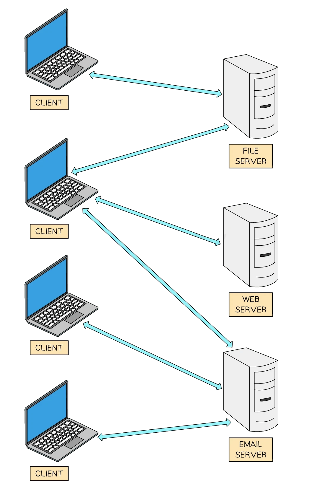
Client computers connected to different servers
When to use a client-server network
- The choice between client-server and peer-to-peer depends on the specific needs and resources of the network in question
- Security, cost, ease of setup, and maintenance requirements should be considered
Peer-to-peer
- This is the simplest type of network
- In this setup, all computers in the network share equal responsibility, and there is no central server
- All machines have equal status
- Each machine is the responsibility of that machine’s user in terms of security, backup, etc.
- Data is often spread around the network, with each user being responsible for their data
| Benefits | Drawbacks |
|---|---|
| Easy to set up and less expensive than client-server as no administrative staff are needed | Lack of central control can lead to security issues and vulnerabilities |
| No dependency on a central server | Not suitable for large networks as it can have performance issues |
| Data can be shared directly between systems without the need for a central server |
-
A peer-to-peer network is typically used in home networks, by small businesses, or for specific applications like file sharing
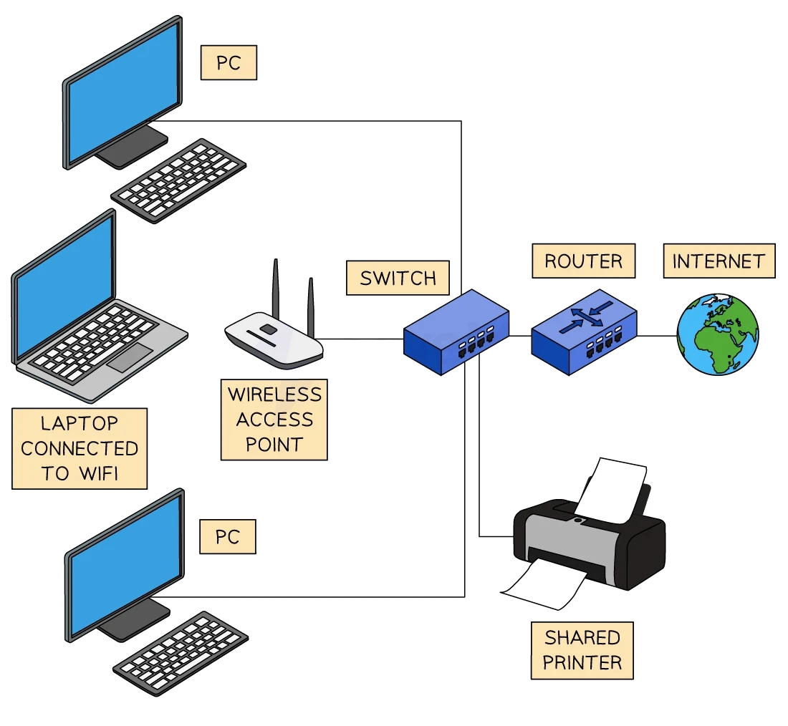
Peer to peer network example setup The Internet uses a client-server model. Describe the role of clients and servers on the Internet [2] Answer -
Web pages/files are saved on servers [1 mark]
- Clients send requests to the web servers [1 mark]
- Web servers process the requests [1 mark]
- …and return the results to the client [1 mark]
- the client displays the results to the user [1 mark]
- …and return the results to the client [1 mark]
Thin-client & thick-client
What is a thin-client?
- A thin client relies on a permanent connection to a server to function
- Can be hardware (a device) or software (an app or program)
- Depends on the processing power of another computer or server
- Cannot function without being connected to a networked computer or server
- The server can be part of a LAN (local area network) or a WAN (wide area network)
- Examples of thin-clients include:
- Cloud-based apps like Google Docs or Microsoft 365
- Remote desktop software (e.g. Chrome Remote Desktop, Citrix)
- Supermarket POS systems connected to a central server for prices, stock, and payments
Thick-client
- Works independently without needing constant connection to a server
- Can be a hardware device or software installed on a local machine
- Uses the processing power of its own device to run applications
- May connect to a network for updates or data sharing, but can function offline
- Often used where performance, speed or offline access is important
- Examples of thick-clients include:
- Installed software like Adobe Photoshop or Microsoft Word
- Standalone games installed and played on a PC or console
- School or office PCs running full applications locally
- Laptops that can run applications without an internet connection
| Feature | Thin-client | Thick-client |
|---|---|---|
| Dependence on server | Needs a permanent connection to a server to function | Can work independently of a server |
| Processing power | Uses the server’s processing power | Uses its own local processing power |
| Functionality when offline | Does not work without a connection | Can function offline |
| Examples | Google Docs, Microsoft 365, Remote Desktop, supermarket POS systems | Microsoft Word, Adobe Photoshop, standalone games, school laptops |
| Best for | Centralised control, low-cost devices, shared environments | Performance, flexibility, offline access |
| Network type | Part of a LAN or WAN | May connect to a network, but not reliant on it |
Network Topologies
What is a network topology?
- A network topology is the physical structure of the network
- It defines how the network hardware will be arranged to create the network
- Topologies to understand for the exam are:
- Star topology
- Bus topology
- Mesh topology
- Hybrid topology
Bus
What is a bus topology?
- A bus topology is all devices connected by one single ‘bus’ cable, terminated at each end
- The terminators stop the signal bouncing back and causing errors
- A bus topology works by each device:
- ‘Listening’ to electrical signals
- Checking data packets for their specific address
- Ignoring data packets it does not recognise
- A bus topology has been replaced by much more efficient network topologies such as the star topology
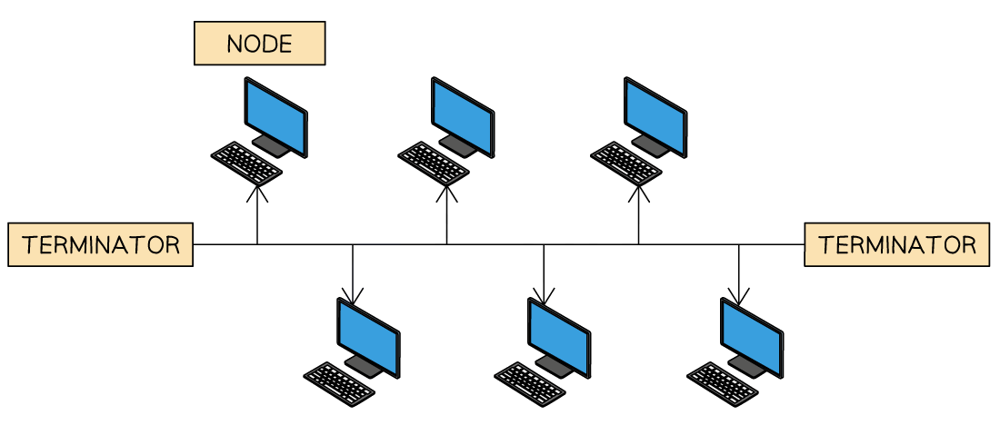
Bus topology - advantages vs disadvantages
| Advantages | Disadvantages |
|---|---|
| Easy and cheap to set up – only one cable is needed | Low security – data is visible to all devices |
| Does not rely on other network hardware (e.g. central server or switch) | Slow data transfer – prone to data collisions |
| If the cable breaks, the whole network is affected (central point of failure) |
Star
What is a star topology?
- A star topology has a central switch which all other devices connect to
- A switch is an i ntelligent devic e which ensures that traffic only goes to the intended device
-
A star topology is commonly seen in most homes, businesses, organisations and schools
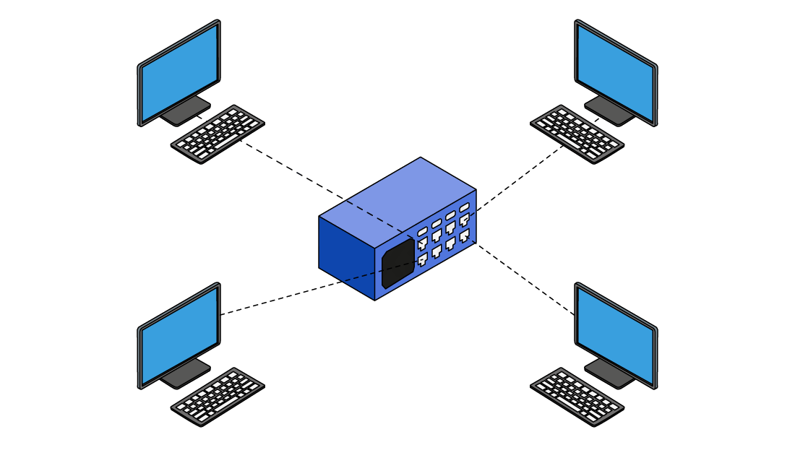
-
Traffic (packets) on a star topology is handled differently depending on the device used as the central node
- A hub will send traffic to all devices on the network, if the address in the packet matches a device it will be accepted, otherwise it is ignored
- A switch will only send traffic to devices on the network where the address in the packet is a match
Star topology - advantages vs disadvantages
| Advantages | Disadvantages |
|---|---|
| If one cable fails, the rest of the network still works | The central switch is a single point of failure |
| A problem with one device (e.g. a school computer) won’t affect others | If the switch stops working, all devices lose connection to the network and its resources |
| More reliable than other topologies like bus or ring | Can be expensive to install due to the switch and extra cabling (not mentioned but useful add-on) |
Mesh
What is a mesh topology?
- A mesh topology allows all computers to be connected to all other computers
- This is known as a full mesh network topology
-
LANs can make use of mesh networks however, they are more commonly seen in IoT devices such as wearable technology and smart home devices

-
Traffic (packets) on a mesh topology can follow two different methods:
- Routing - devices are given routing logic (act like a router) to ensure packets are sent to the correct device in the shortest route
- Flooding - all packets are sent to all devices using no routing logic, this can lead to network flooding causing performance issues
Mesh topology - advantages vs disadvantages
| Advantages | Disadvantages |
|---|---|
| If one cable fails, the network still works – data can use an alternate route | Requires lots of hardware, cables, and switches |
| Provides high fault tolerance – multiple paths for data to travel | High cost to set up due to the amount of equipment needed |
| Very reliable – good for critical systems | Hard to scale – adding new devices is more complex than in a star topology |
| A partial mesh topology is often used as a more practical and cost-effective alternative |
Hybrid
What is a hybrid topology?
- A hybrid topology is a mix of two of more different network topologies
- For example, bus & star, star & mesh etc
- A typical use of a hybrid topology would be when there is a need to join different networks together
- Imagine a large education trust takes over three schools: School A, School B, and School C.
- School A uses a bus topology to connect classroom computers with a simple shared cable
- School B uses a star topology to link all devices to a central switch in the IT room
- School C uses a mesh topology to make sure every building (e.g. science block, library) stays connected, even if one cable fails
- When the trust wants to connect all three schools into a single network, it uses a hybrid topology
- This allows:
- Each school to keep its own existing setup (bus, star, or mesh)
- The schools to be linked together efficiently
- Easy expansion, such as adding a new school or admin office without changing everything
- The network to be more flexible and reliable, using the strengths of each topology
Hybrid topology - advantages vs disadvantages
| Advantages | Disadvantages |
|---|---|
| Combines the strengths of multiple topologies (e.g. reliability of mesh, simplicity of bus) | Complex to design – needs careful planning to combine different topologies |
| Flexible – different parts of the network can be optimised for different needs | Expensive – more hardware and maintenance may be needed |
| Scalable – new segments (e.g. a new site or building) can be added without changing the whole setup | Troubleshooting can be harder – different parts use different systems and rules |
| Reliable – failures in one part don’t necessarily affect the rest of the network |
Cloud computing
What is cloud computing?
- Cloud computing is when software, services or files are hosted entirely on remote servers
- Accessed through the internet
- The two most common cloud computing examples are:
- Cloud storage
- Cloud software
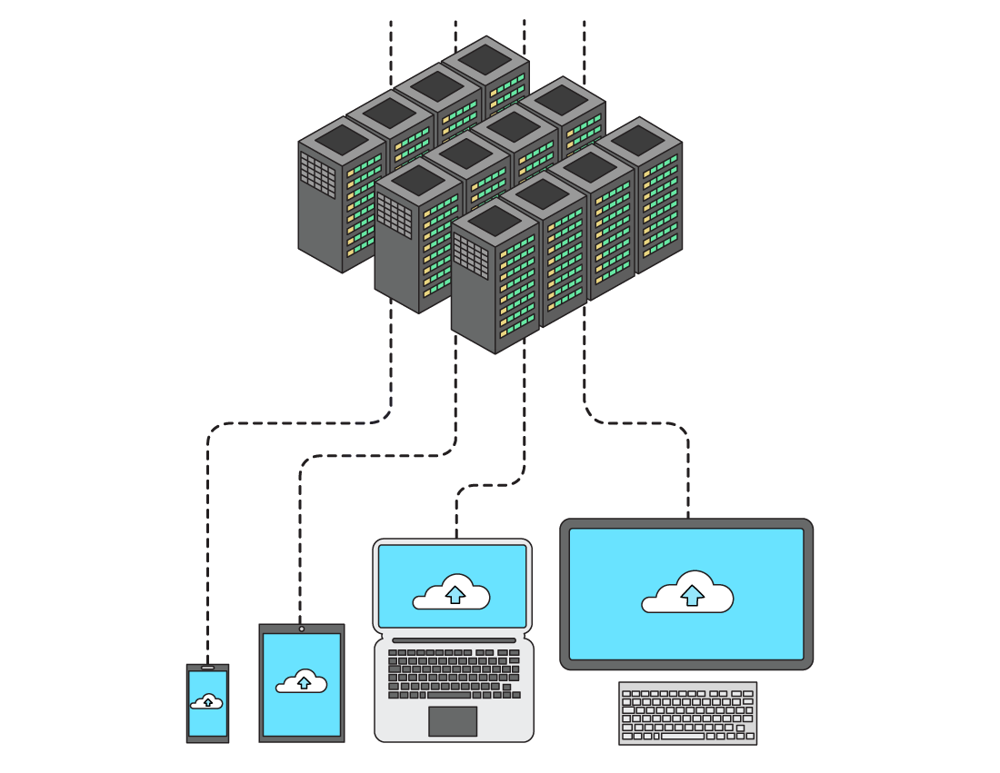
Cloud storage
- Cloud storage is long-term storage of data that resides in a remote location
- Accessible onlyvia the Internet (WAN)
- Data is stored on remote servers in data centres
- Storage is usually on HDDs (magnetic) but increasingly SSDs (solid state)
- Examples include: Google Drive, Dropbox, OneDrive
Cloud software
- Cloud software is hosted and managed remotely
- The user accesses the software online (on demand)
- The provider handles:
- Maintenance
- Upgrades
- Security
- Typically paid for via a monthly fee or yearly subscription
-
Examples include: Google Docs, Microsoft 365, Adobe Creative Cloud A company uses cloud computing. Define cloud computing. [1] Answer
-
Accessing a service/files/software on a remote server [1 mark]
Benefits and drawbacks of cloud computing
Cloud storage
| Benefits | Drawbacks |
|---|---|
| Accessibility – access files from anywhere with an internet connection | Needs a reliable internet connection – slow or no connection can stop access to files |
| Easy to share and collaborate with others | Can be expensive – especially for large amounts of data or long-term use |
| Works on any device with internet access | Ongoing costs – often requires a monthly or annual subscription |
| Scalability – storage can be increased or decreased as needed | May need to pay for extra data transfer (upload/download limits) |
| Reliability – data is backed up across multiple servers | Security risks – data sent over the internet could be intercepted |
| Security features – encryption, multi-factor authentication | Less control – provider manages security, but you’re still responsible for protecting user data |
| No need to buy expensive storage hardware | |
| No need to hire specialist IT staff – support is handled by the provider | |
| Eco-friendly – centralised data centres are more efficient than millions of local servers |
Cloud software
| Benefits | Drawbacks |
|---|---|
| Accessible anywhere – use the software on any device with an internet connection | Needs internet access – won’t work properly offline |
| No installation needed – runs through a browser or app | Performance depends on internet speed – slow connections can affect usability |
| Automatic updates – provider handles all software updates and patches | Ongoing costs – usually requires a monthly or yearly subscription |
| Maintenance is handled – no need for specialist IT staff to manage or fix the software | Data privacy concerns – your data is stored on the provider’s servers |
| Scalable – easy to upgrade or downgrade your software plan | Less control – provider decides when updates or changes are made |
| Security included – providers manage security features like firewalls and encryption | Legal responsibility – you’re still responsible for how personal data is stored, even if it’s hosted |
| Often works across multiple devices – laptops, tablets, phones | Some features may be limited compared to full versions installed on a local device |
Public & private clouds
What is the difference between a public and a private cloud?
| Type | Public Cloud | Private Cloud |
|---|---|---|
| Ownership | Servers are owned and managed by a third-party provider | Servers are owned and managed by the company itself |
| Access | Services are shared with other organisations or users | Access is restricted to that company or organisation |
| Examples | Google Drive, Microsoft 365, Dropbox | Company intranet, internal company cloud servers |
| Cost | Cheaper – shared infrastructure reduces cost | More expensive – company pays for hardware, maintenance, and staff |
| Control | Less control over data and security settings | More control – company manages its own data and security |
| Security | Relies on provider’s security measures | Can apply custom security policies and have full oversight |
Give two benefits and one drawback of using cloud computing. [3] Answer 1 mark each from: Public
- Computing services offered by 3rd party provider over the public Internet [1 mark]
-
Public is open/available to anyone with the appropriate equipment/software/credentials [1 mark] Private
-
Computing services offered either over the Internet or a private internal network [1 mark]
- Only available to select users not the general public [1 mark]
- Private is a dedicated/bespoke system only accessible for/from the organisation [1 mark]
Transmission Media
Wired vs wireless
What is a wired network?
- A wired network is a network where physical cables are used to join devices together and transmit data
- Computers can be connected to networks using many different types of wires to transmit data
- The most common types of cables in a wired network are:
- Ethernet
- Fibre optic
- Copper
Advantages & disadvantages of wired networks
| Advantages | Disadvantages |
|---|---|
| Speed - Fast data transfer | Portability - Can’t move easily, location is limited by physical cable |
| Security - Better physical security | Cost - Need more cables to add a new device |
| Range - High (up to 100m), less susceptible to interference | Safety - Cables can be trip hazards, need routing along walls, under floors |
What is a wireless network?
- A wireless network is a network where connections are made using radio waves to transmit data through the air
- The most common types of wireless connections are:
- Wi-Fi
- Bluetooth
What is Wi-Fi?
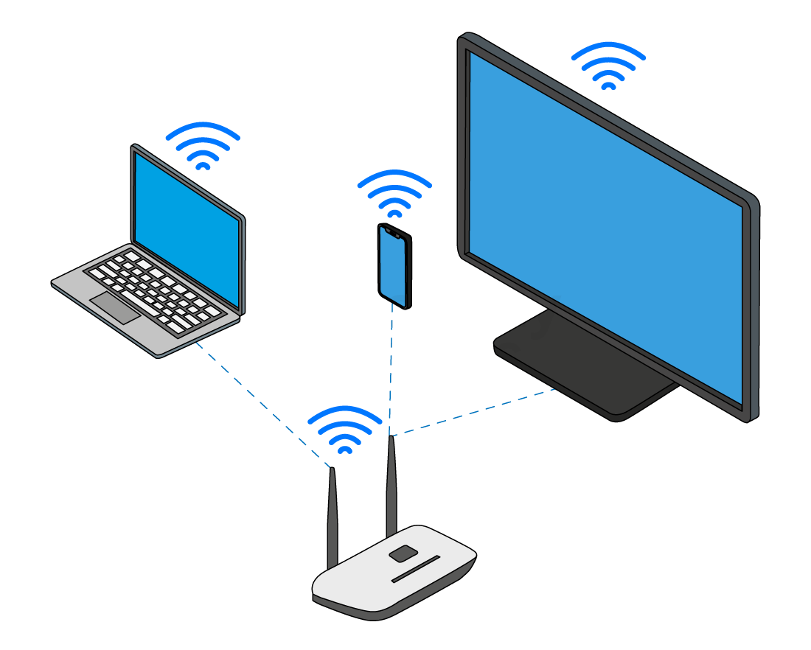
- Wireless fidelity (Wi-Fi) is a common standard for wireless networks
- Wi-Fi is common in most homes and offices to connect devices such as laptops, tablets & smart phones
- Using Wi-Fi, devices communicate with a wireless access point (WAP), which can be a standalone device or built into a router or switch
What is Bluetooth?
- Bluetooth is another common standard for wireless networks
- Bluetooth is common in most homes and offices to connect devices such as headphones, controllers, keyboards & mice
- Bluetooth is used typically for a direct connection between two devices
Advantages and disadvantages of wireless networks
| Advantages | Disadvantages |
|---|---|
| Portability - Easy to move around, location is only limited by range | Speed - Slower data transfer than wired |
| Cost - Less expensive to setup and add new devices | Security - Less secure than wired |
| Compatibility - Most devices are manufactured with a built in wireless adapter | Range - Relies on signal strength to the WAP, signals can be obstructed (up to 90m) |
Types of media
What is transmission media?
- Transmission media is the type of cable used in wired connections
- Wired connections offer a higher bandwidth than wireless connections
- The main options for transmission media are:
- Twisted pair
- Coaxial
- Fibre-optic
Twisted pair
- Carries electrical signals between devices on a local area network (LAN)
- Common in offices and homes to connect devices such a desktop computers & servers
- Allow duplex communication
- Slower transfer rate compared to coaxial and fibre-optic
- Can suffer from external interference (electromagnetic radiation)
- Low cost
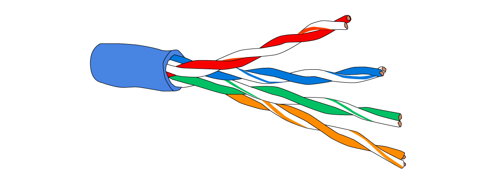
Coaxial
- Used in telecommunication to transmit voice signals, forming the traditional landline phone network
- Adapted to deliver network traffic on a wide area network (WAN) making the internet possible
- Degrades over time which limits their range compared to fibre optic
- Suffers from interference which can disrupt data quality
- Transmits data at a much slower rate, and has a much lower bandwidth compared to fibre optic
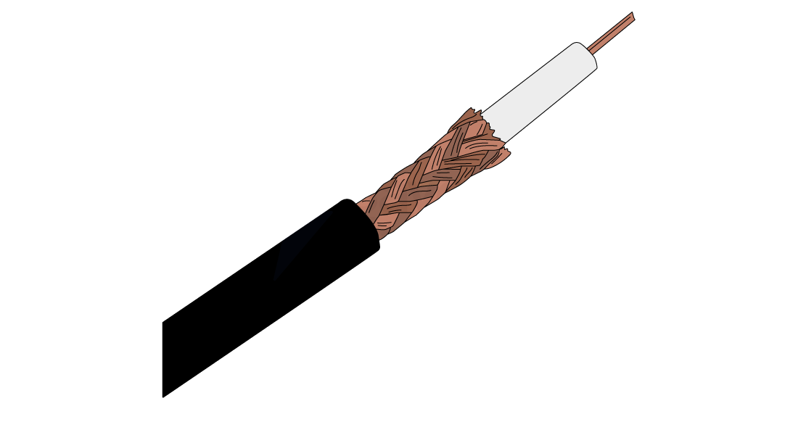
Fibre optic
- Uses light to transmit data on a wide area network (WAN)
- Transmits data at high speed and has a higher bandwidth compared to copper cables
- Does not suffer from interference which makes them the most secure option to send sensitive data
- Can cover a long distance without any degradation, they can span cities and countries
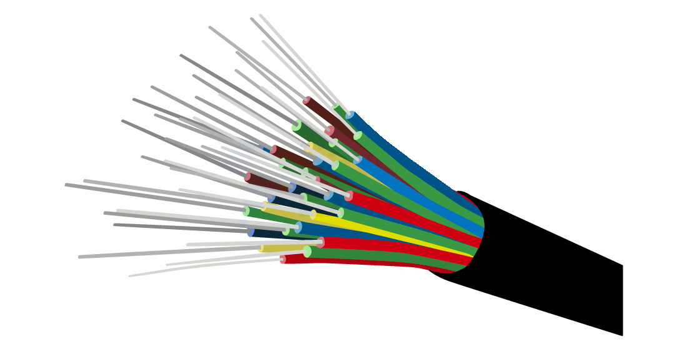
Quick comparison
| Feature | Twisted pair | Coaxial cable | Fibre optic |
|---|---|---|---|
| Used for | LAN connections in homes/offices | Voice signals (telecoms), early WAN/internet | High-speed WANs, internet infrastructure |
| Data transfer method | Electrical signals | Electrical signals | Light signals |
| Speed | Slower than coaxial and fibre | Slower than fibre | Fastest |
| Bandwidth | Low to medium | Lower than fibre | Highest |
| Signal degradation | Moderate | Degrades over time | Minimal degradation – works over long distances |
| Interference | Prone to electromagnetic interference | Also suffers from interference | No interference – more secure |
| Communication | Allows duplex communication | Supports duplex (but lower quality) | Full duplex |
| Cost | Cheap | Medium cost | Expensive |
Network Hardware
LAN hardware
Hub
- A hub is a networking device which is used to connect multiple devices in a network
- Hubs are ” dumb ” devices that pass on anything received on one connection to all other connections
- Because all data is sent to all devices, it can lead to network inefficiencies and security issues
-
Hubs allow multiple other devices to be connected to them
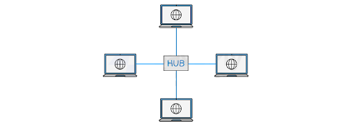
-
Hubs are generally much cheaper than switches, but:
- When a hub receives a data packet, it will broadcast it to every device on the network
- This creates two potential issues:
- As the information is being broadcast to every device, it will make unnecessary traffic, especially if there are a large number of devices
- As every device will receive the data packet, security may be a concern
Switch
- A network switch is a networking device that connects devices on a computer network and uses packet switching to receive, process and forward data to the destination device
-
Unlike a hub, a switch only sends data to the device it was intended for, which improves network efficiency
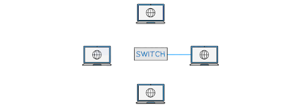
-
This is done by each switch having a lookup table
| Port | Mac address |
|---|---|
| 1 | DF-42-B2-11-4D-E3 |
| 2 | 11-14-F2-1D-C3-C6 |
| 3 | 00-4B-17-7C-A2-C9 |
- When a switch receives a data packet, it examines the destination MAC address and looks up that address in its lookup table
- Once it has found the matching MAC address, it will then forward the data packet to the corresponding port
Server
- A server is a powerful computer that provides services or resources to other devices on a network (called clients)
- Can manage and store files, host websites, control access to printers, or run applications
- Often kept in dedicated rooms or data centres due to their importance and high uptime requirements
- Designed to handle multiple requests at once and stay on 24/7
- Servers usually run specialist operating systems (e.g. Windows Server, Linux)
- Can be part of a LAN (local server) or accessed remotely over a WAN (cloud server)
- Examples include: file server, print server, web server, mail server
Network Interface Card (NIC)
- Historically a card inserted into a slot on the motherboard but now more likely to be built into the motherboard, that enables a device to connect to a network
- NICs have a built-in ethernet port and can be connected to a network via an ethernet cable
- It provides a dedicated, full-time connection to a network, converting the computer’s data into a network-friendly format
- Every NIC has a unique identifier called a MAC address, used to identify the device on the network
- The primary function of a NIC is to send and receive data packets between the computer or device and the network

Wireless Network Interface Card (WNIC)
- Allows a device to connect to a wireless network (Wi-Fi)
- Often built into the motherboard of modern laptops, tablets, and smartphones
- Uses radio waves to send and receive data to/from a wireless router or access point
- Provides a dedicated connection to the network, without needing physical cables
- Supports standard wireless protocols like Wi-Fi 4, 5, or 6 depending on the model
- Has a unique MAC address used to identify the device on the network
- Converts the device’s data into a wireless signal suitable for network transmission
Wireless Access Point (WAP)
- Allows wireless devices to connect to a wired network
- Acts like a bridge between the wired and wireless parts of a network
- Commonly found in homes, schools, and offices as part of a Wi-Fi setup
- Often built into wireless routers, but can also be a separate device in larger networks
- Uses radio signals to send and receive data from wireless devices (e.g. laptops, phones)
- Extends the range of the wireless network, especially in large buildings
- Supports communication using standard Wi-Fi protocols (e.g. 802.11ac, 802.11ax)
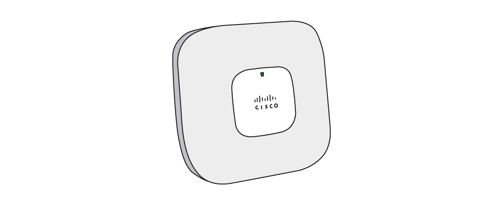
Bridge
- Connects two separate network segments together
- Often used to join two LANs so they act as one larger network
- Operates at the data link layer (Layer 2) of the OSI model
- Can filter traffic by checking MAC addresses to decide if data should cross the bridge
- Helps reduce network traffic by only forwarding necessary data
- Commonly used in older or more complex network setups
Repeater
- Used to boost or regenerate signals in a network
- Helps extend the range of a wired or wireless signal
- Receives a weak signal and retransmits it at full strength
- Used when data needs to travel long distances without losing quality
- Often used in Wi-Fi range extenders to improve coverage in large buildings
- Operates at the physical layer (Layer 1) of the OSI model
Router
What is the role of a router?
- A router is a network hardware device that routes data from a local area network (LAN) to another network connection - it joins two networks together
- Routers analyse data packets and determine the best path for the packet to reach its destination
- The header contains information about the packet
- The payload is the actual data being sent
- The IP address of both the sender and intended recipient is stored in the header of the data packet
- The router can often feature additional functionalities such as wireless networking, built-in firewalls for enhanced security, and network switch capabilities
- A router being used to connect a LAN to a WAN will have a public IP address, which has been assigned to it by an Internet Service Provider
-
It is this public IP address that other routers use to identify and direct packets to the network
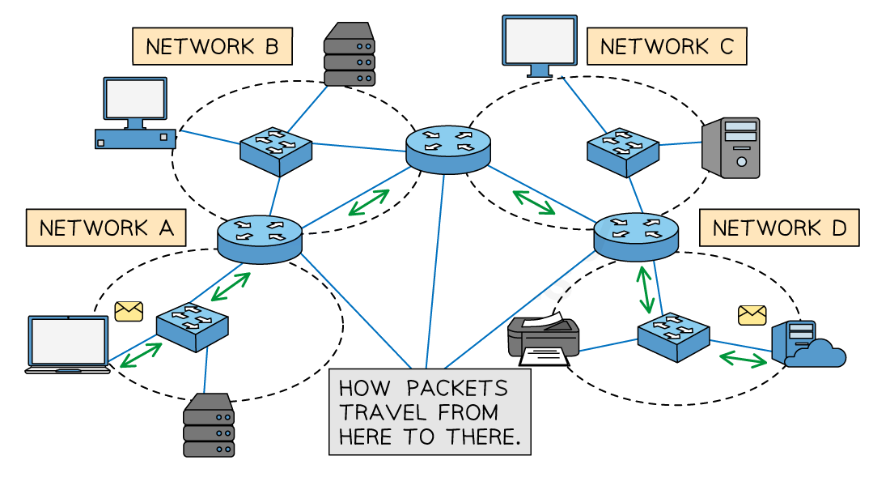
Multiple networks connected by routers, represented by the blue circular objects -
If the data packet is coming into the LAN, the router will send the data packet to the specific device within its LAN that the packet is meant for
- If the packet is being sent from a device within the LAN, it will read the header of the packet to determine the intended destination IP address
- It might have to travel through several routers before it gets to its destination
- Each pass from router to router is called a hop
- It will then forward the packet to its destination
- The network access device or ‘ home hub ’ used in your home network will have a router built into it
| Step | Description |
|---|---|
| 1 | A router receives incoming data packets from one network and analyses the packet header to determine the destination IP address |
| 2 | It then looks up the IP address in a routing table (routing table of known networks) to determine the next network where the packet should be sent |
| 3 | The router then forwards the packet to the appropriate network or device |
- Every router repeats this process the data packet passes through until it reaches its destination
- In addition to routing data between networks, routers can also perform other functions such as:
- Assigning IP addresses to devices within the LAN
- Filtering incoming traffic based on certain criteria, such as IP address, port number, or protocol type
Ethernet
What is Ethernet?
- Ethernet is a protocol that controls
- Wiring
- Data transmission
- Data encapsulation
- A wired networking standard used in a Local Area Networks (LANs)
- Data is transmitted in frames
- Uses CSMA/CD to help detect and avoid data collisions
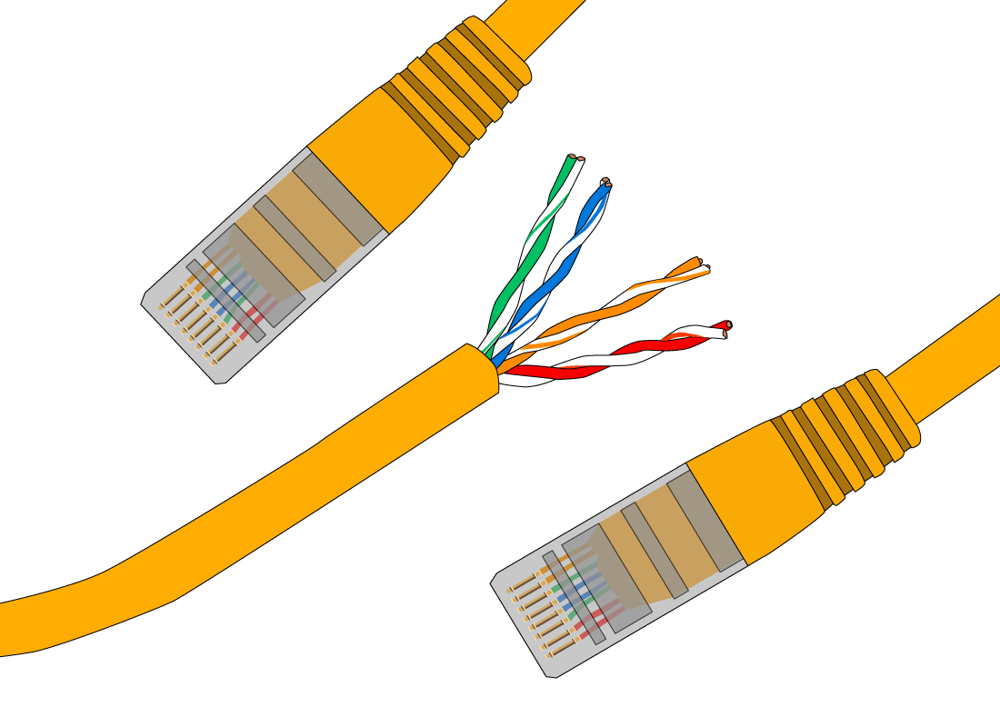
Ethernet frames
- Data is transmitted across the network in structured units called frames
- Each frame typically includes:
- Preamble – A sequence of bits used to synchronise communication between devices
- Destination MAC Address – The unique ID of the device the data is being sent to
- Source MAC Address – The unique ID of the device sending the data
- EtherType / Length – Indicates the type of data or the size of the payload
- Payload – The actual data being sent (e.g. a web page, file, or message)
- FCS (Frame Check Sequence) – Used for error detection to check if data arrived correctly
CSMA/CD
What is CSMA/CD?
- CSMA/CD is a protocol used to detect and prevent collisions in a bus topology
- Stands for Carrier Sense Multiple Access with Collision Detection
- Devices check if the channel is free before sending data
- If the channel is busy, the device waits
- If the channel is free, the device transmits the data
- Since all devices share the same cable, two can send data at the same time, causing a collision
-
When a collision happens:
- Devices detect it
- A jamming signal is sent to alert other devices
- Both devices stop transmitting
- Each device waits for a random amount of time, then tries again Ethernet uses Carrier Sense Multiple Access/Collision Detection (CSMA/CD). Describe CSMA/CD. [4] Answer 1 mark per point to max 4
-
A workstation / node (wishing to transmit) listens to the communication channel [1 mark]
- the data is only sent when the channel is free [1 mark]
- As there is more than one computer connected to the same transmission medium [1 mark]
- two workstations can start to transmit at the same time, causing a collision [1 mark]
- If a collision happens, the workstations send a jamming signal to abort transmission [1 mark]
- and each waits a random amount of time before attempting to resend [1 mark]
Bit streaming
What is bit streaming?
- Bit streaming is the continuous flow of data (bits) sent over the internet or a network
- Commonly used for real-time services like video, audio, or live broadcasts
- Data is sent in small chunks so it can be played back immediately
- Reduces the need to download the entire file before use
- Bit streaming can be categorised into two types:
- Real-time
- On-demand
Real-time vs on-demand
| Feature | Real-time streaming | On-demand streaming |
|---|---|---|
| What is it? | Watching something live as it happens | Watching something whenever you choose |
| Examples | Live sports, live news, online gaming, video calls | Netflix, YouTube, Amazon Prime |
| Timing | Streamed and watched at the same time | You choose when to watch |
| Delays (latency) | Needs low delay to feel live | Can handle small delays thanks to buffering |
| Internet needed | Needs a strong and steady connection | Can adjust quality based on your connection (adaptive bitrate) |
| Playback controls | Usually no pause or rewind during live events | You can pause, rewind, or skip as needed |
Factors affecting bit streaming
What factors can affect bit streaming?
- There are two main factors to consider when using bit streaming, they are:
- Bit rate
- Broadband speeds
Bit rate
- Bit rate is the amount of data able to be transmitted in a specified unit of time (usually seconds)
- Streaming platforms will adjust bit rates based on network performance
| Feature | Higher bit rate | Lower bit rate |
|---|---|---|
| Quality | Allows for higher quality content (HD / 4K) | Lower quality – more pixelation or blurriness |
| Visual & audio clarity | Sharper and clearer images and sound | May look blurry, especially during fast movement |
| Bandwidth usage | Uses more network bandwidth | Uses less bandwidth |
| Buffering | May require a larger buffer to maintain quality | Smaller buffer can be enough, but more frequent buffering likely on poor connections |
Broadband speeds
- Broadband speeds affects how well data can be streamed
- Faster speeds = better quality and smoother playback
| Aspect | High-speed broadband | Slow/restricted broadband |
|---|---|---|
| Network capacity | Handles higher bit rates | Can’t support high bit rates |
| Allows multiple devices to stream smoothly | Limited bandwidth affects overall network performance | |
| Supports HD/4K quality | May force streams to use lower resolution | |
| User experience | Smoother streaming with minimal buffering | Frequent buffering and interruptions |
| Clear visuals and audio | Pixelation and lower sound quality | |
| Ideal for real-time content (e.g. gaming, video calls) | Struggles with live or interactive services |
The Internet
Internet vs WWW
What is the Internet?
- The Internet is a global network of networks (Interconnected Network)
- The Internet is the most well-known Wide Area Network (WAN)
- The Internet is the infrastructure used to provide connectivity to the World Wide Web (WWW)
- Uses protocols like TCP/IP to transfer data between devices and networks
What is the World Wide Web (WWW)?
- The world wide web, or simply the web, is a collection of websites and web pages that are accessed using the Internet
- It was created in 1989 by Tim Berners-Lee, who envisioned it as a way to share and access information on a global scale
- The web consists of interconnected documents and multimedia files that are stored on web servers around the world
- Web pages are accessed using a web browser, which communicates with web servers to retrieve and display the content
- Uses protocols like HTTP and HTTPS to request and deliver web content
Internet hardware
Modem
- Modem stands for modulator-demodulator
- Converts digital signals from a computer into analogue signals to send over telephone or cable lines
- Also converts analogue signals back into digital so the computer can understand them
- Allows devices to connect to the internet through technologies like:
- DSL
- Cable
- Dial-up
- Used to send and receive data over long distances via traditional communication lines
Public Switched Telephone Network (PSTN)
- Developed soon after the invention of the telephone in the late 1800s
- Originally built to handle voice communication over copper wires
- As the demand for other forms of communication grew, the PSTN was adapted to enable internet access
- Used to connect computers/devices and LANs between towns and cities
- Traditional copper telephone lines are being slowly replaced with fibre optic cables
- Fibre gives access to higher bandwidth and faster data transfer speeds
Dedicated lines
- Dedicated lines (e.g. T1, T3, and fibre-optic) provide exclusive, high-speed connections between two points
- Unlike the PSTN, these connections are always active and not shared with other users
- Faster and more reliable
- Ideal for businesses and organisations needing consistent, high-bandwidth internet
- Better for activities like video conferencing, cloud computing, and large file transfers
| Connection type | Speed |
|---|---|
| T1 Line | Up to 1.54 Mbps |
| T3 Line | Up to 45 Mbps |
| Fibre-Optic | Speeds in the gigabits |
Cellular networks
- Provide wireless communication for mobile phones and other portable devices
- The network is made up of cells, each served by a cell tower (base station)
- Devices connect to the nearest tower to send and receive signals
- As a user moves, their device automatically switches to the next closest tower (handover)
- Used for voice calls, text messaging, and mobile data (internet access)
- Support different generations of mobile technology:
- 2G – Basic calls and texts
- 3G – Mobile internet and video calling
- 4G – Fast internet browsing and streaming
- 5G – Very high-speed internet, low latency (great for gaming and real-time apps)
IP addressing
What is an IP address?
- An IP (Internet Protocol) address is a unique identifier given to devices which communicate over the Internet (WAN)
- IP addresses are dynamic, they can change
- IP addresses make it possible to deliver data to the right device
- A device connecting to a network will be given an IP address, if it moves to a different network then the IP address will change
IPv4
- Internet Protocol version 4 is represented as 4 blocks of denary numbers between 0 and 255, separated by full stops
-
Each block is one byte (8 bits), each address is 4 bytes (32 bits)
-
IPv4 provides over 4 billion unique addresses (2 32), however, with over 7 billion people and countless devices per person, a solution was needed
IPv6
- Internet Protocol version 6 is represented as 8 blocks of 4 hexadecimal digits, separated by colons
-
Each block is 2 bytes (16 bits), each address is 16 bytes (128 bits)
-
IPv6 could provide over one billion unique addresses for every person on the planet (2 128)
Subnetting
- Subnetting is the process of dividing a larger network into smaller, more manageable parts, called subnets (short for sub-networks)
- Each subnet works like a mini-network within the main network, allowing devices to communicate more efficiently
- Benefits of subnetting include:
- Reduces network traffic – less data is broadcast across the whole network
- Improves speed and performance – data stays within its local subnet
- Increases security – limits access so not all devices can reach all parts of the network
- Easier to manage and maintain – changes can be made to one subnet without affecting the rest
- Improves organisation – helps group devices by department or function
- It’s commonly used in larger networks, like schools or businesses, to reduce traffic, keep data local, and make management easier
Public vs private IP addresses
- Public IP addresses are assigned to devices that need a constant connection to the internet
- Examples:
- Web servers
- Email servers
- Globally unique – no two devices can have the same public IP
- Allows devices to be directly accessed from anywhere on the internet
- Private IP addresses are assigned to devices on a Local Area Network (LAN) by a router
- Not routable on the internet – improves network security
- Used for items in a home or office, such as:
- Laptops
- Phones
- Printers
- Allows internal communication without exposing devices to the public internet
Static vs dynamic IP addresses
- Static IP addresses are fixed IP addresses that do not change
-
Assigned to devices that need a consistent address Commonly used for:
- Websites
- Remote access services
- Email or file servers
- No management required once set
- Allows reliable access from anywhere on the network or internet
- Dynamic IP addresses are temporarily assigned when a device connects to the network
- Comes from a pool of available IP addresses
- Managed automatically by a DHCP server (Dynamic Host Configuration Protocol)
- Ideal for devices where a fixed address isn’t needed
- e.g. laptops, smartphones, or guest devices Computers on the Internet have IP addresses. Describe the format of an IP address. [3] Answer IPv4
-
Four groups of denary or hexadecimal digits [1 mark]
- Numbers between 0 and 255 / 0 and FF [1 mark]
- Each is stored in 1 byte / 8 bits [1 mark]
- The whole number is stored in 32 bits / 4 bytes [1 mark]
- Separated by full stops [1 mark]
-
Correct example [1 mark] OR IPv6
-
Eight groups of (Hexadecimal) digits [1 mark]
- Numbers between 0 and FFFF [1 mark]
- Each is stored in 2 bytes/16 bits [1 mark]
- The whole number is stored in 128 bits / 16 bytes [1 mark]
- Separated by colons [1 mark]
- The first instance of multiple groups of zero can be replaced by a double colon [1 mark]
- Correct example [1 mark]
Locating Resources on the World Wide Web
URL
What is a URL?
- A Uniform Resource Locator (URL) is a unique identifier for a web page, known as the website address
- It is text-based to make it easier to remember
- A user enters a URL into a web browser to view a web page
- An example of a URL is:
- A URL can typically be split into three parts:
- Protocol
- Domain name
- Web page/file name
- Using the example about the URL would be split as follows:
| Protocol | https | Communication method to transfer data between client and server |
| Domain name | www.savemyexams.com | Name of the server where the resource is located |
| Web page/file name | /a-level/computer-science/ | Location of the file or resources on the server |
DNS
What is the Domain Name System (DNS)?
- The DNS is like the Internet’s phone book
- It translates domain names (like
www.google.com) into IP addresses (like142.250.180.68) - Computers use IP addresses to find and connect to servers
- When you type a URL into your browser:
- DNS finds the matching IP address
- Your device connects to that server to load the website
- DNS finds the matching IP address
- Without DNS, users would have to remember the IP address of every website they visit
- When a domain is registered or its server IP address changes, the DNS must be updated
- This update is called DNS propagation, and it may take some time to spread across the internet
What happens when you type a URL into a web browser?
- The user enters a URL into the address bar of the web browser
- The browser checks its cache to see if it already knows the IP address for the website
- If not found, it sends the domain name to a DNS server, which stores an index of domain names and their matching IP addresses
- If the DNS server finds the IP address, it sends it back to the web browser
- If it does not find the IP address, it passes the request on to a higher-level DNS server
- This may involve contacting:
- A root server, which points to the correct Top-Level Domain (TLD) server (e.g..com,.org),
- The TLD server, which points to the authoritative DNS server for the domain
- A root server, which points to the correct Top-Level Domain (TLD) server (e.g..com,.org),
- The authoritative DNS server responds with the correct IP address
- The web browser then sends a request to the web server at that IP address
- The web server processes the request and sends back the website’s data (such as HTML, images, CSS, and JavaScript)
- Finally, the web browser renders the content and displays the website to the user
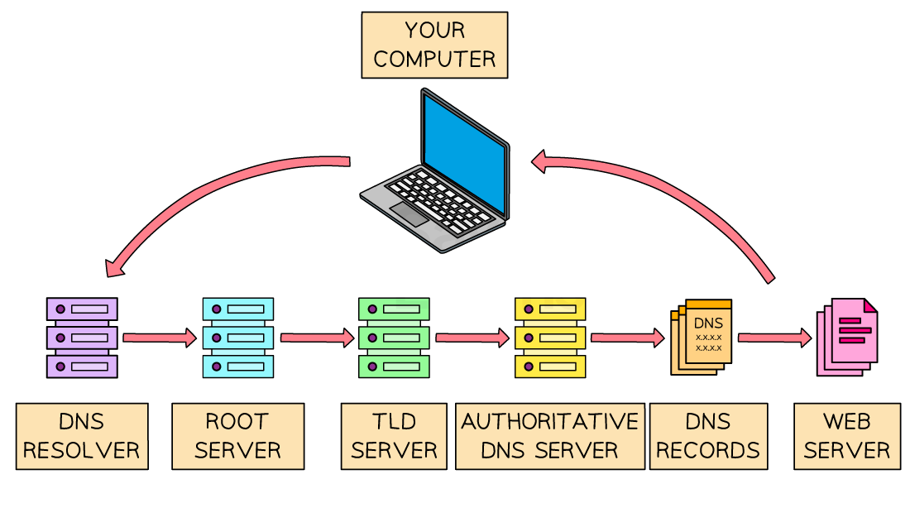